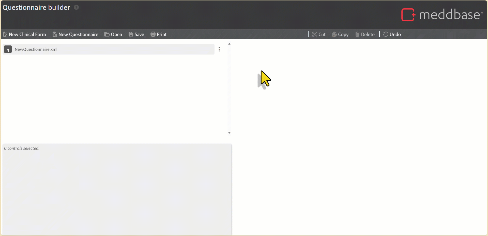
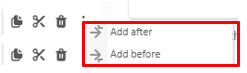
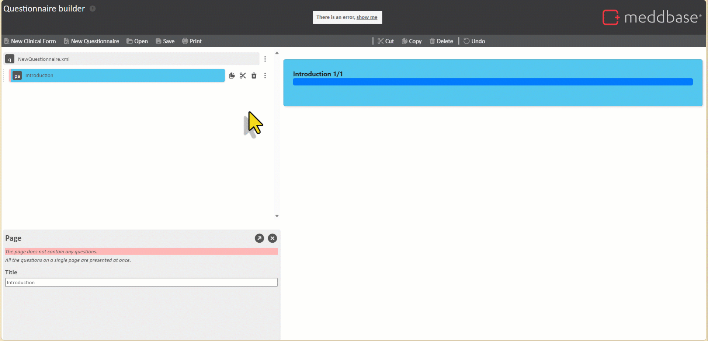
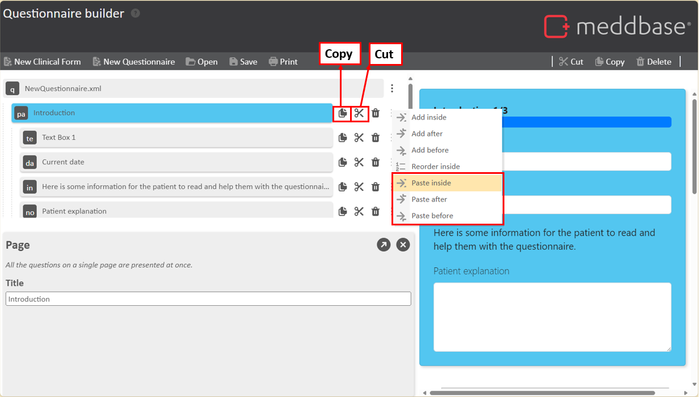
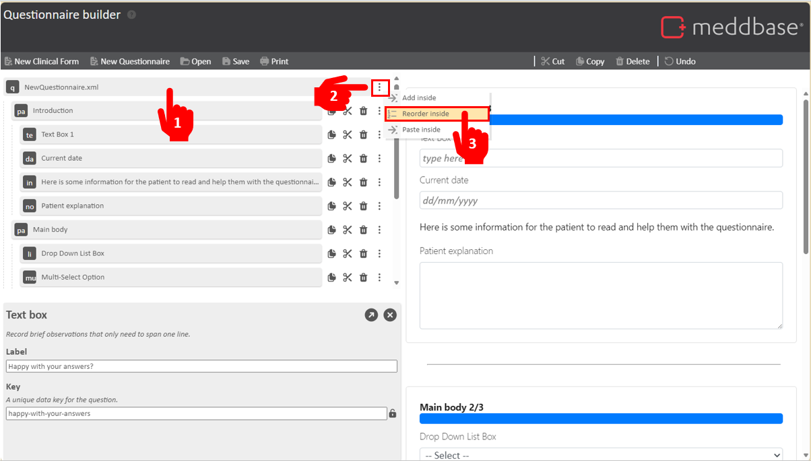
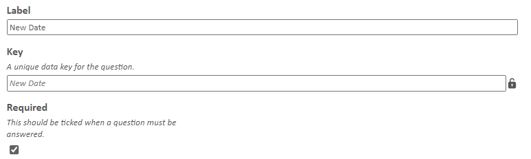
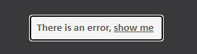
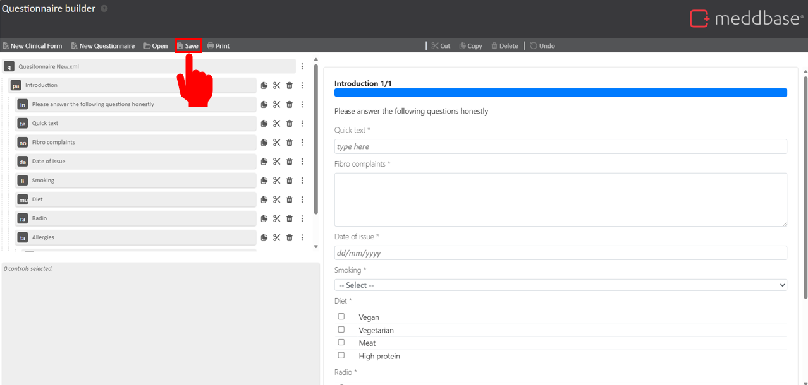

In Meddbase, forms are a vital aspect of any consultation or patient experience. From simple to complex, it is important you are able to record vital information to help provide the best level of care.
The Meddbase Form Builder is a multipurpose tool that allows you to curate your own bespoke Clinical Form and Questionnaires, with various controls to support your team in getting the correct and appropriate information.
Questionnaires allow you interact with your patients and gather vital information prior to the appointment. Questionnaires are only available within portals.
For guidance on how to use the Clinical Form Builder, click here.
What is the purpose of the article?
This article is designed to guide you through the process of accessing the Questionnaire Builder as well as creating, amending and previewing questionnaires within the platform.
This guide will walk you through the entire process, from the initial creation of a questionnaire to exporting and requesting an import into your chamber.
This article is split into the following sections:
Tour wizard - When first loading the Form Builder, this will pop up, however can be exited at any time. To re-open the tour wizard, press the ?.
Tool bar -
New Clinical Form- Start a new Clinical Form - this will wipe any existing Clinical Form in the Builder.
New Questionnaire- Start a new questionnaire form. This will redirect to the builder with relevant questions
Open - Load an existing Clinical Form into the builder. Please note: This is not available for Questionnaires.
Save - Save the Clinical Form to your device as a .xml file.
Print - Print the Clinical Form.
Cut - Cut questions to your clip board.
Copy - Copy questions to your clip board.
Delete - Delete a control.
Undo - Undo your last action.
Outline view -
⋮ - A Drop down menu to Add, Re-order, Paste questions.
- Copy selected control to clipboard.
- Cut selected control to clipboard.
- Delete selected control.
Settings panel - Modify controlsettings.
Previewpanel- A preview of the questions as they would look in a consultation, updated in real time.
Getting started with the Questionnaire Builder
Adding your first page
The questionnaire builder works by splitting the questionnaire into pages, and questions being inserted into those pages.
Click the ⋮ button in the Overview Panel and click Add Inside.
A pop-up window will appear, this is the question controls window. On the left-hand side, you can select the type of control you would like to add. Initially, this will only show a page at this stage.
A page will ensure all the questions on a single page are presented at once. Once a page has been added, you are then able to add your questions.
Edit the Title of the page underneath settings, located to the right of the pop-up window, .
Click +Add to add your first page.

Now you have a page, you can now begin adding in your questions.
Adding questions to your page
Click the ⋮ button along from your first page in the control panel.
Click Add inside.
Select your question type.
A pop-up window will appear, this is the questions window. On the left-hand side, you can select the type of control you would like to add. The control's function is explained on the top right-hand side, in italic font beneath each setting. See Types of Questions.
Customise your question's settings on the right-hand side of the pop-up window.
Not all questions will have the same customisation settings. See Question Settings.
Click+Add to add your question.
Continue to add questions to your page using Add after or Add before.

Adding further pages
To avoid long questionnaires, you can separate questions across multiple pages.
To add a page:
Click the ⋮ button along from an existing page.
Click Add after or Add Before.
Rename the Title of the new page. You will only be able to add a page at this stage.
The video below demonstrates a walkthrough of adding questions to your page and then adding an additional page.

Quicker workflows and Reordering questions
When designing questionnaires, efficiency matters. To help you develop and standardise your questionnaires, you can use the following techniques:
Copy, cut and paste
Now you have multiple questions , within pages, you can copy, cut and paste these for a faster workflow. Copy or cutquestions to your clip board to paste after or before.
Click on the question you want to duplicate, this should highlight blue.
Click Copy to store this to your clipboard.
Click ⋮ next to the question you want to paste above or below of.
Click Paste after or Paste before.
The control/s will now be pasted into your Clinical Form and you can begin to amend their settings.
: This is useful when needing to create multiple questions in fewer clicks, such as copying whole pages.

Reordering questions
Reorder inside is an additional feature associated with the form, pages and tables. You can reorder pages, questions within a page and questions within a table.
The reorder feature works as follows:
Click on the item you want to re-order the internal questions of.
Click Reorder Inside.
Click and drag elements in your desired order.
Preview the order changing in the background.
Click X in the top corner to confirm changes.

Amending Settings
After adding questions, you can further make individual adjustments to question settings using the panel located at the bottom left-hand side of the page. Types of question settings can be found here: Question Settings.
Settings can be modified at any point using the following process:
Select the control you wish to amend.
Make amendments to the control settings in the bottom left panel.
Open question settings in a larger window by press the arrow in the top right corner of the panel to display all settings.
To exit, select another question or press the x at the top right of the settings panel.
Please note: Changes are automatically updated and displayed in the Preview Panel in real time.

Labels and Keys Editing a question's label will automatically create a unique key based on the label’s name. You can can override the default key value to one of your own.
You can also lock keys so they can’t be changed, more so important when you are using the auto-populated key that is defined by the label text.
Required
You are able to flag which questions are mandatory and therefore the patient must answer before proceeding.
To make a question mandatory, You will need to ensure the Required tickbox is enabled. This will then assign an * next to the question. Patients will not be able to progress with the form until the required question has been answered.
Lists, Multi-Select and Radio buttons
Lists, Multi-Select and radio buttons have an additional setting as they comprise of a range of answers.
Inbuilt error detection
The form builder has an in-built error detection. This is presented in the form of a dialog box at the top of the screen and red banners indicating which control is not behaving as expected.
You are still able to proceed with adding and editing questions, as it may be the warnings are pre-emptive before you have added the control to fix the error. I.e adding buttons at the bottom of a clinical form to enforce any mandatory fields.
When the error box shows, click show me to direct you to where the error is.

Next Steps
Now you have created your Questionnaire, you will need to save it as a file to your computer under a suitable name. From there, you will need to raise support ticket, attach the file and request for the questionnaire to be uploaded to your chamber. Support will then upload this into your Chamber ready for you to use.
To do this, you need to:
Press the Save button at the top of the Form Builder interface. Note: The Clinical Form Builder does not autosave your progress, you will need to manually save any changes made.

Save the document locally to your computer under a suitable name.
Contact Support and provide them with a copy of the saved Questionnaire (.xml). The team will organise for this to be imported into your chamber.
Terminology, Types of questions and Settings
Questions- Customisable input fields, allowing users to define specific data entry points (See 'Types of questions ').
Key - A unique key for the field. This is used when reporting.
Types of Questions
Control type
Definition
Page
All the questions on a single page are presented at once.
Date
Record a historical date.
Information
Display informational text in the body of the form
List box
Ask a question with a known list of possible answers. This is a good choice when there are a large number of options.
Multi select
Ask a question with a known list of possible answers and allow more than one answer from the list.
Notes
Record long observations that may need to span more than one line.
Radio buttons
Ask a question with a known list of possible answers. This is a good choice when there are only a few options.
Table
Organise one or more questions that must all be answered together into a structured record. Record more than one structured records under a single label.
Data is submitted into the table to be saved and stored in the medical history.
A table can contain:
Date
Text box
Text box
Record brief observations that only need to span one line.
Question Settings
Control setting
Description
Label
Control title, alter the name of the control
Key
A unique data key for the question.
Required
Set a question to be mandatory. If this is enabled, patients are unable to progress in the questionnaire until the required questions have been answered.
Information text (Information specific control)
Body of Information in the clinical form.
Answers (List box specific control)
Add each possible answer for the drop down list.
Options (Radio button specific control)
Add each possible answer for the radio button options.
Advanced Features on Questionnaires
Questionnaires in Meddbase support advanced features. If you wish to use advanced questionnaires, raise a CAP ticket on the Cority Community.
 - Copy selected control to clipboard.
- Copy selected control to clipboard. - Delete selected control.
- Delete selected control.